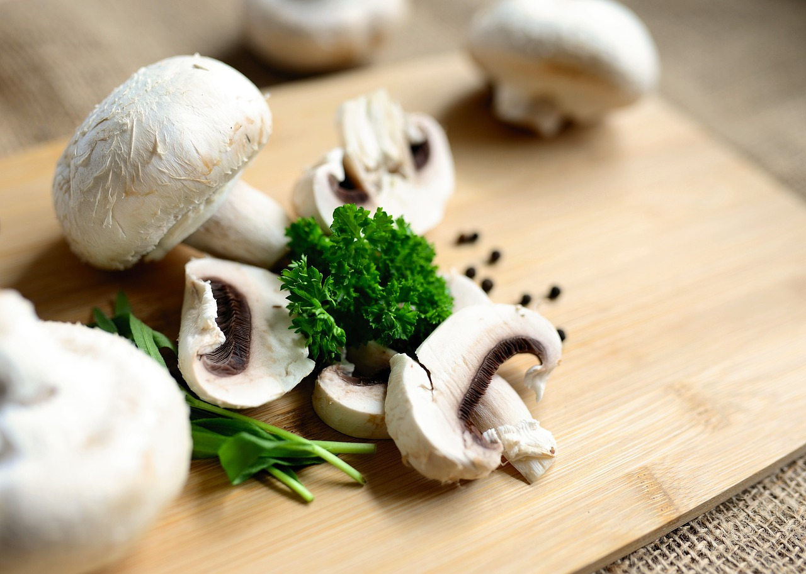
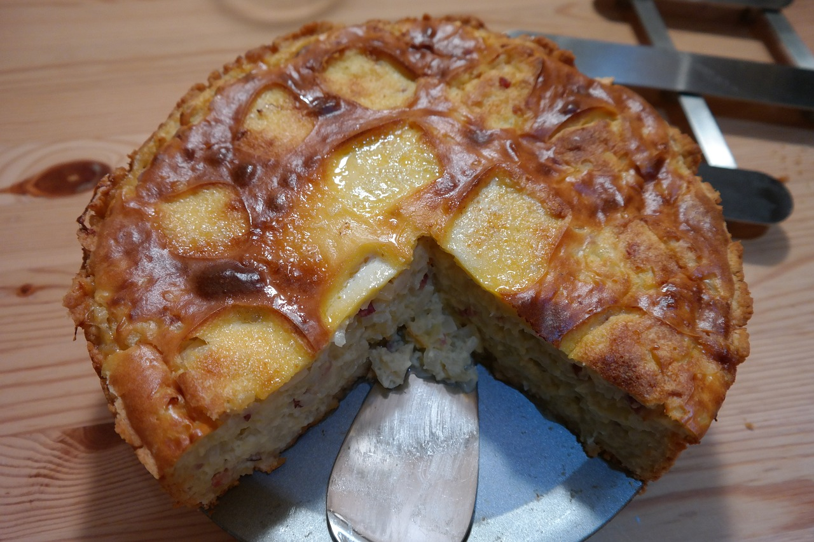

Przepisy na dania z grzybami
Kremowa zupa grzybowa z borowikami
Aromatyczna zupa, która przeniesie Cię prosto do leśnej polany. Borowiki nadają jej głęboki, intensywny smak, a dodatek śmietanki sprawia, że jest niezwykle kremowa.
Grzyby podsmażamy na maśle z cebulą, zalewamy bulionem warzywnym i gotujemy do miękkości. Blendujemy, dodajemy śmietankę, a na koniec dekorujemy świeżą pietruszką.
... czytaj dalej
Tagliatelle z kurkami w sosie śmietanowym

Delikatny makaron połączony z kurkami podsmażonymi na maśle i zanurzonymi w aksamitnym sosie śmietanowym. Idealne danie na szybki obiad.
Kurki dusimy z cebulą i czosnkiem, zalewamy śmietanką, doprawiamy solą, pieprzem i gałką muszkatołową. Sos mieszamy z ugotowanym al dente makaronem i podajemy z tartym parmezanem.
... czytaj dalej
Risotto z podgrzybkami i parmezanem
Tradycyjne włoskie danie w grzybowej odsłonie. Kremowe risotto z dodatkiem świeżych podgrzybków to elegancka propozycja na kolację.
Na oliwie podsmażamy szalotkę, dodajemy ryż arborio i stopniowo dolewamy bulion, mieszając. Grzyby podsmażamy osobno i dodajemy pod koniec gotowania wraz z masłem i parmezanem.
... czytaj dalej
Placki ziemniaczane z sosem grzybowym
Chrupiące placki ziemniaczane podane z aromatycznym, kremowym sosem grzybowym. Połączenie klasyki z leśnym smakiem grzybów.
Placki przygotowujemy z tartej ziemniaczanej masy. Grzyby (np. pieczarki lub prawdziwki) dusimy z cebulą i śmietanką, doprawiamy solą, pieprzem i koperkiem, a potem podajemy jako dodatek.
... czytaj dalej
Zapiekanka ziemniaczana z grzybami leśnymi

Sycąca i aromatyczna zapiekanka z ziemniakami, grzybami leśnymi i kremowym serem. Idealna na rodzinny obiad lub kolację.
Grzyby podsmażamy na maśle, układamy warstwami z plasterkami ziemniaków, polewamy śmietaną z przyprawami i posypujemy serem. Zapiekamy do złocistej skórki.
... czytaj dalej